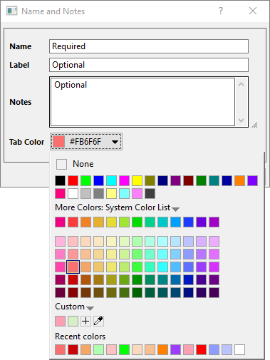

Einfache Operationen von Matrixmappe und Matrixblatt
MatBk-Mats-Operation
Die Matrixmappe kann bis zu 1024 Arbeitsblätter enthalten. Wenn Sie alle Blätter löschen, wird die Matrixmappe gelöscht. Die Blätter können neu geordnet oder umbenannt werden. Blätter können auch "herausgerissen" und anderen Matrixmappen hinzugefügt oder in einen leeren Abschnitt des Arbeitsbereiches gezogen werden, um eine neue Matrixmappe zu erstellen. Jedes Blatt kann bis zu 90 Millionen Zellen enthalten. Allerdings wird die maximale Anzahl aus technisch-praktischen Gründen wahrscheinlich eher von den verfügbaren Systemressourcen bestimmt.
Eine neue Matrixmappe öffnen
- Klicken Sie auf die Schaltfläche Neue Matrix auf der Symbolliste Standard und wählen Sie Datei: Neu: Matrix.
- Wählen Sie im Menü Datei: Neu: Matrix: Durchsuchen.... Der Dialog Neue Mappe wird geöffnet, in dem Sie nach verfügbaren Vorlagen für Matrixmappen suchen können. Beachten Sie die Schaltfläche Vorlagencenter öffnen in der oberen rechten Ecke des Dialogs Neue Mappe. Klicken Sie auf die Schaltfläche, um neue Mappenvorlagen zu finden und herunterzuladen und diese in Ihren Analysen zu nutzen.
- Um ein neues Matrixfenster ausgehend von einem bestehenden Matrixblatt zu erstellen, zeigen Sie mit dem Mauszeiger auf den Reiter des Matrixblatts, halten Sie die linke Maustaste gedrückt und ziehen Sie das Matrixblatt in einen leeren Abschnitt des Origin-Arbeitsbereichs.
Ein Blatt zur Matrixmappe hinzufügen
- Klicken Sie mit der rechten Maustaste auf eine Registerkarte des Matrixblatt und wählen Sie Einfügen, Hinzufügen oder Duplizieren ohne Daten.
- Um ein bestehendes Blatt zu einer anderen Matrixmappe hinzuzufügen, zeigen Sie mit dem Mauszeiger auf den Reiter des Matrixblatts, halten Sie die linke Maustaste gedrückt und ziehen Sie das Blatt in die neue Matrixmappe.
Name und Kommentare zu einem Blatt hinzufügen
Klicken Sie mit der rechten Maustaste auf einen beliebigen Blattreiter und klicken Sie dann auf Name und Notizen, um den Dialog Name und Notizen zu öffnen.
-
- 
- Jedes Blatt hat einen Namen, der auf dem Reiter angezeigt wird.
- Optional kann das Blatt eine Beschriftung und Notizen haben.
- Die Reiterfarbe kann mit Hilfe der Auswahlliste festgelegt werden oder, wenn im Blatt nichts ausgewählt ist, durch Klicken auf die Schaltfläche Füllfarbe auf der Symbolleiste Stil.
- Informationen zum Benennen finden Sie unter Matrixmappen, Matrixblätter und Matrixobjekte benennen.
Matrixblatt(-blätter) in eine andere Matrixmappe verschieben
- Ziehen Sie den Reiter des Matrixblatts in den Arbeitsbereich, um ihn in eine neue Matrixmappe zu verschieben, oder in eine andere Matrixmappe, um ihn dorthin zu verschieben.
- Um mehrere Matrixblätter zu verschieben, halten Sie die Strg-/Shift-Tasten gedrückt, und klicken Sie auf mehrere Blattreiter, um sie per Drag&Drop in den Arbeitsbereich oder eine andere Matrixmappe zu verschieben.
- Klicken Sie mit der rechten Maustaste auf eines der Matrixblätter und wählen Sie Navigieren ....
- Im aufgerufenen Dialog Matrixblattnavigation wählen Sie das/die gewünschte/n Blatt/Blätter (halten Sie die Strg/Shift-Taste gedrückt, um mehrere Blätter auszuwählen) und klicken Sie mit der rechten Maustaste, um Verschieben in ... auszuwählen.
Ein Matrixblatt zwischen Matrixmappen oder Origin-Sitzungen kopieren und einfügen
Ab Origin 2018b können Sie das aktuelle Blatt in die Zwischenablage kopieren und es dann als neues Blatt aus der Zwischenablage in ein Matrixfenster einfügen, indem Sie mit der rechten Maustaste auf den Reiter klicken und die Optionen Blatt kopieren und Als neues Blatt einfügen im Kontextmenü auswählen.
Wenn Sie die Option Blatt kopieren ausgewählt haben, können Sie
- mit der rechten Maustaste auf Origins grauen Arbeitsbereich klicken, um Als neues Blatt einfügen auszuwählen und dieses Blatt in eine neue Matrixmappe einzufügen.
- mit der rechten Maustaste auf ein anderes Blatt klicken (kann in einem anderen Matrixmappenfenster sein), um Als neues Blatt einfügen auszuwählen und dieses Blatt als neues Blatt in das aktuelle Matrixmappenfenster einzufügen.
- zu einer anderen Origin-Sitzung wechseln und einen Reiter im Zielmatrixmappenfenster auswählen, mit der rechten Maustaste darauf klicken und die Option Als neues Blatt einfügen auswählen. Dieses Blatt wird dann in die ausgewählte Matrixmappe der Origin-Sitzung eingefügt. In diesem Fall können Sie ein Matrixblatt zwischen verschiedenen Origin-Sitzungen kopieren und einfügen.
Ein Matrixobjekt zu einem Matrixblatt hinzufügen
- Verwenden Sie die Tastenkombinationen Strg + Shift + N, um Miniaturbilder anzuzeigen, klicken Sie dann mit der rechten Maustaste auf ein Miniaturbild und wählen Sie im Kontextmenü Hinzufügen. Oder klicken Sie auf die Schaltfläche des Objekts und wählen Sie Hinzufügen im Popupmenü.
Um eine neues Matrixobjekt vor das bereits bestehende Matrixobjekt einzufügen:
- Verwenden Sie die Tastenkombinationen Strg + Shift + N, um Miniaturbilder anzuzeigen, klicken Sie dann mit der rechten Maustaste auf ein Miniaturbild und wählen Sie im Kontextmenü Einfügen. Oder klicken Sie auf die Schaltfläche des Objekts und wählen Sie Einfügen im Popupmenü.
Anpassen des Erscheinungsbilds von Matrizen über den Dialog Eigenschaften
Einige Anpassungen des Erscheinungsbilds einer Matrix können mit Hilfe des Dialogs Matrixeigenschaften vorgenommen werden. Dieser kann mit dem Befehl Matrix: Eigenschaften setzen im Origin-Menü aufgerufen werden.
In diesem Dialog können Sie die Breite der Spalten eingeben, das Anzeigeformat und Stellen und Datentypen für die Matrixdaten festlegen. Beachten Sie, dass diese Einstellungen nur auf das aktive Matrixfenster angewendet werden. Um ein anderes Matrixobjekt im gleichen Blatt anzupassen, können Sie die Schaltflächen Vorheriges und Nächstes verwenden, um das Objekt auszuwählen und anzupassen..
Anpassen des Erscheinungsbilds von Matrizen mit Hilfe der Symbolleistenschaltflächen Format und Stil
Einige Matrixanpassungen können mit Hilfe der Symbolleistenschaltflächen Format und Stil durchgeführt werden. Wählen Sie zunächst den Abschnitt des Arbeitsbereichs, den Sie verändern möchten.
- Um den Zeichensatz, die Punktgröße usw. zu verändern, verwenden Sie die Schalflächen der Symbolleiste Format.
- Um die Textfarbe zu verändern, verwenden Sie die Auswahlliste Schriftfarbe in der Symbolleiste Stil.
- Um die Zellen- oder Spaltenfarbe zu verändern, verwenden Sie die Schaltfläche Füllfarbe in der Symbolleiste Stil.
- Um den Matrixzellen Rahmen hinzuzufügen (oder zu entfernen), verwenden Sie die Schaltfläche Rahmen in der Symbolleiste Stil.
Matrixmappen speichern
Sie können eine Matrixmappe mit Daten und weiteren Anpassungen in einer .ogwu- oder .ogw-Datei speichern.
- Mit der aktiven Matrix wählen Sie Datei: Fenster speichern unter. Hierdurch öffnet sich der Dialog Speichern unter. Matrix (*.ogmu) ist (standardmäßig) in der Auswahlliste Dateityp voreingestellt.
- Geben Sie den gewünschten Dateinamen in das Textfeld Dateiname ein und wählen dann einen gewünschten Zielordner.
Matrixmappenvorlagen speichern
Die Anpassungen der Matrixmappe können auch ale eine Vorlage gespeichert werden (im Gegensatz zu einer Matrixmappe). Wenn sie als Vorlage gespeichert werden, werden jedoch keine Daten gespeichert.
- Wählen Sie bei aktiver benutzerdefinierter Matrixmappe Datei: Template speichern unter.
- Weisen Sie Vorlagenname und Dateityp zu. Geben Sie optional eine Vorlagenbeschreibung ein, legen Sie einen Dateipfad (beachten Sie, dass der Standardpfad der \Anwenderdateien\ im Allgemeinen der wünschenswerteste ist) und ein Vorschaubild fest (am hilfreichsten, wenn Sie die Vorschau des Windows-Dateiexplorers nutzen -- ansonsten erzeugt Origin eine Vorschau zur internen Verwendung, z. B. für das Popupbild, das in Neue Mappe gezeigt wird).
Um mehr über Matrixvorlagen zu erfahren, lesen Sie Was wird mit einer Matrixvorlage gespeichert?